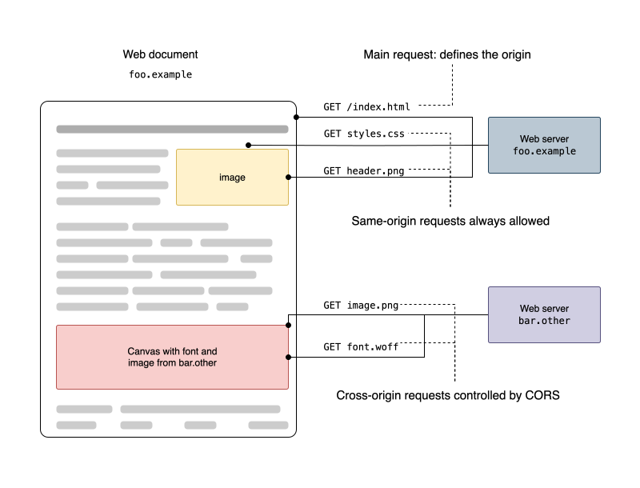
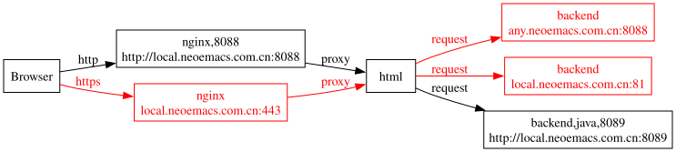
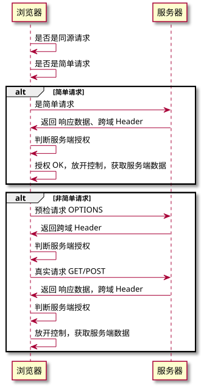

浏览器跨域机制
什么是跨域请求？
-
同域请求&跨域请求
页面地址与页面内资源请求地址进行对比。当且仅当两者的协议、域名、端口都相同时，说资源请求是一个同域请求。

-
协议相同
页面地址 接口地址 跨域原因 http://local.neoemacs.com.cn https://local.neoemacs.com.cn 协议不同 -
域名相同
页面地址 接口地址 跨域原因 http://local.neoemacs.com.cn http://any.neoemacs.com.cn 域名不同 -
端口相同
页面地址 接口地址 跨域原因 http://local.neoemacs.com.cn http://local.neoemacs.com.cn:81 端口不同
为什么浏览器有跨域机制
- 跨域机制是浏览器的一种安全策略，保护服务器的资源安全
-
XSS 攻击
-
Cookie 的跨域安全策略
- cookie 跨域共享策略，限制同源的数据才能共享 cookie
- cookie 是网站自己的信息资源，是否允许发送给其他网站默认被浏览器强管控
- cookie 的基本属性
- httpOnly 仅允许 http 请求发送，不允许 js 脚本获取，实际上是防 XSS 攻击
- domain（默认本网站域名）
- path（默认 /);
- max-age (默认值 -1)
跨域机制触发的表现
- 真正的请求发送不出去
- 举例：前端 HXR/Fetch 随意设置一个自定义 header name：比如 mdd
- 请求已发送，但响应 body 数据不能被浏览器获取
- 举例：针对垮域请求，后端只处理 option 请求、但不处理真实请求
- 请求已发送，但响应 Header 不能被浏览器 JS 读取
- 举例：JS 获取后端返回的 responseHeader（前提：未设置 Access-Control-Expose-Headers）
测试环境搭建

-
代码例子
-
nginx 配置
-
nginx 启动
nginx -c /Users/van/Desktop/0310/nginx.conf -
代码
events { accept_mutex on; multi_accept on; worker_connections 24; } http { server { listen 443 ssl; server_name local.neoemacs.com.cn; ssl_certificate /Users/van/Desktop/0310/ssl/server.crt; ssl_certificate_key /Users/van/Desktop/0310/ssl/server.key; location /0310 { alias '/Users/van/Desktop/0310'; } } server { listen 8088 default_server; server_name local.neoemacs.com.cn; location /0310 { alias '/Users/van/Desktop/0310'; } } }
-
-
html 代码
访问地址：http://local.neoemacs.com.cn:8088/0310/demo.html
-
代码
<html> <h1>cross origin</h1> <input value='send xhr' onclick='sendxhr()' type='button'></input> <script > function sendxhr() { var xhr = new XMLHttpRequest(); xhr.open('POST', 'https://www.jianshu.com/shakespeare/v2/notes/b722f61bb09f/audio', true); xhr.setRequestHeader('Content-type', 'application/json') xhr.send(); } </script> </html>
-
-
跨域请求时序图
-
时序图

-
简单请求
- 简单请求，Head 头仅包含如下 4 个（并且其值需要满足特定条件），value 长度是否限制？简单请求可直接访问，与同源请求一样：
- https://developer.mozilla.org/en-US/docs/Web/HTTP/CORS#simple_requests
- Accept：
- 主要数据格式/次要数据格式;参数，只能是固定值否则浏览器不允许发送请求，用户无法随意构造
- i.e. Accept:application/json
- CORS-safelisted request header yes, with the additional restriction that values can’t contain a CORS-unsafe request header byte: 0x00-0x1F (except 0x09 (HT)), “():<>?@[\]{}, and 0x7F (DEL).
- Accept-Language：
- Accept-Language 表示浏览器所支持的语言类型；
- i.e Accept-Language: zh-cn,zh;q=0.5, zh-cn 表示简体中文；zh 表示中文； q 是权重系数，范围 0
< q <1，q 值越大，请求越倾向于获得其“;”之前的类型表示的内容，若没有指定 q 值，则默认为 1，若被赋值为 0，则用于提醒服务器哪些是浏览器不接受的内容类型。 - CORS-safelisted request header yes, with the additional restriction that values can only be 0-9, A-Z, a-z, space or *,-.;=.
- Content-Language：
- 指明 body 的语言类型
- i.e Accept-Language: zh-cn,zh;q=0.5
- CORS-safelisted request header yes, with the additional restriction that values can only be 0-9, A-Z, a-z, space or *,-.;=.
- Content-Type ：
- 主要数据格式/次要数据格式;参数，只能是固定值否则浏览器不允许发送请求，用户无法随意构造
- CORS-safelisted :
- application/x-www-form-urlencoded
- multipart/form-data
- text/plain
- 简单请求，使用不同的 jsAPI 表现不一样，比如 axios 与 fetch 就不一样，似乎 axios 的表现更接近官方说法
- 简单请求，Head 头仅包含如下 4 个（并且其值需要满足特定条件），value 长度是否限制？简单请求可直接访问，与同源请求一样：
-
预检请求
- 浏览器修改请求方法为 OPTION 请求，尝试获取服务器对资源管理的策略。
- OPTION 请求会屏蔽 requestBody，以及 request Header 信息。
- 预检请求可以认为是对服务器资源的一种保护，
垮域响应头
-
Access-Control-Allow-Origin
- 允许的域，格式：协议:域名:端口，只能设置 1 个值，或者全通配符 *
-
Access-Control-Allow-Credentials
- 是否允许发送 cookie，如果是，Access-Control-Allow-Origin、Access-Control-Allow-Methods、Access-Control-Allow-Headers 均不允许为通配符
- 一般不允许设置为 true，cookie 不容易控制要发送 cookie 将其转换为 header 再设置 Access-Control-Allow-Origin 控制更精准
-
Access-Control-Allow-Methods
- 允许的方法，多个用逗号分隔，或者使用通配符 *
-
Access-Control-Max-Age
- 垮域检测时间间隔，单位秒
- 不同浏览器有不同的默认值
- https://developer.mozilla.org/en-US/docs/Web/HTTP/Headers/Access-Control-Max-Age
-
Access-Control-Allow-Headers
- 允许的请求头，多个用逗号分隔，或者使用通配符
-
Access-Control-Expose-Headers
- 前端 JS 允许读取的响应头，多个用逗号分隔，或者使用通配符
代码测试
-
springmvc，单链路

@RequestMapping(path = "test/do", method = { RequestMethod.OPTIONS }) public void doing() { log.info("\n==== [options]"); } // @GetRequestMapping(path = "test/do", method = { RequestMethod.GET }) @GetMapping(path = "test/do" ) public User doings() { log.info("\n==== [get]"); User user = new User(); user.setName("vanniuner"); // response.addHeader("Access-Control-Allow-Headers", "User-Agent"); response.addHeader("Access-Control-Allow-Origin", "http://local.neoemacs.com.cn:8088"); response.addHeader("Access-Control-Allow-Headers", "mmd"); return user; }-
跨域请求错误的一种情况：真实请求被浏览器拦截，真实请求没发出去
-
SpringMVC @GetMapping 与 @RequestMapping 不需要额外声明 OPTIONS
-
SpringMVC 如果同时声明 2 个 mvc 函数，一个是 OPTIONS，另外一个是 GET，手动写的 OPTIONS 方法视为无效
-
跨域请求错误的一种情况：请求发送成功，但响应数据被浏览器拦截
-
性能问题，跨域请求是否有必要注意，mvc 函数体内的程序被执行了 2 次？需要注意，option 请求仅返回跨域 header 即可，需要特殊处理
-
后端有无必要识别一个请求是跨域请求？无必要，在网站内发起 ajax 请求做控制主要是为了防止 XSS 攻击。
-
设置多个相同的跨域响应头，仅针对 Access-Control-Allow-Origin 这种只允许设置一个值的情况需要注意，设置多个会出问题，尤其是在多链路情况下
@Autowired HttpServletRequest request response.addHeader("Access-Control-Allow-Origin", "http://local.neoemacs.com.cn:8088"); response.setHeader("Access-Control-Allow-Origin", "http://local.neoemacs.com.cn:8088"); -
有 cookie 的情况
- 跨域发送 cookie 服务器需要设置 Access-Control-Allow-Credentials：true，这实际也是对服务器的一种保护（默认情况下减少请求数据量）
- Access-Control-Allow-Credentials：true 情况下，其他跨域响应头（Access-Control-Allow-Origin）不允许出现通配符 ,安全系数极大降低
-
跨域响应头是否支持半通配符？比如 Access-Control-Allow-Origin : http://*.neoemacs.com.cn:8081 、Access-Control-Allow-Headers: mmd*,xs*
- 不支持
-
跨域请求错误的一种情况：请求发送成功，但响应头信息被浏览器拦截
-
-
不同浏览器实现的标准不同
-
IE
- 内核：微软 旗下 Trident 内核，也是俗称的 IE 内核；
- Forbidden header name
- User-Agent
-
chrome
- 内核：google 旗下 Webkit 的 分支内核 Blink
- Forbidden header name
- 设置了也无效
- User-Agent
- 设置了也无效
-
firefox
- 内核：Mozilla 旗下 Gecko
- Forbidden header name
- User-Agent
-
safari
- 内核：Applpe 旗下：基于 Webkit 内核维护
- Forbidden header name
- 设置有效果，需要服务器添加，Access-Control-Allow-Headers
- User-Agent
- 可设置，但需要服务器添加，Access-Control-Allow-Headers
-
chrome 与 safari 浏览器的差异
设置 user-agent 请求头的差异
-
fetch 与 axios 的差异
content-type
-
-
springGateway，多链路

- 设置多个相同的跨域请求头，api 不一样
-
springboot 设置了，Access-Control-Allow-Origin；springGateway 也设置了 Access-Control-Allow-Origin, 将导致接口无法访问
ServerHttpResponse response responseHeaders.remove("Access-Control-Allow-Credentials"); responseHeaders.set("Access-Control-Allow-Credentials", "true");
-
- 设置多个相同的跨域请求头，api 不一样
其他问题
- header 头不允许超过 128 个字符长度
- 垮域响应头不能设置多个，网关处添加的处理需要先清理，再设置
- 垮域资源限制不止控制接口，还包括静态资源，图片、字体、js、css 等等
正确的跨域处理逻辑
- 判断 requestHeader Origin, 仅合法的才放行
- 响应头设置 Access-Control-Allow-Origin = requestorigin
- 响应头设置 Access-Control-Allow-Methods
- 响应头设置 Access-Control-Allow-Headers 和 Access-Control-Expose-Headers 并支持可扩展，不设置为*
- 响应头设置 Access-Control-Allow-Credentials 为 true
- 响应头设置 Access-Control-Max-Age，使得浏览器缓存行为更加可控
- 识别出 OPTIONS 请求后进行请求拦截，阻断业务逻辑执行
- 识别出其他请求，则正常执行返回业务数据
跨域请求术语
CORS(Cross-Origin Resource Sharing)
-
HXR
-
Fetch Apis
-
Same-origin_policy
- 同源策略
https://developer.mozilla.org/en-US/docs/Web/Security/Same-origin_policy - The same-origin policy is a critical security mechanism that restricts how a document or script loaded by one origin can interact with a resource from another origin.
- 它有助于隔离潜在的恶意文件，减少可能的攻击向量。 例如，它可以防止 Internet 上的恶意网站在浏览器中运行 JS，以从第三方 Webmail 服务（用户已登录）或公司 Intranet（其免受攻击者的直接访问）读取数据 没有公共 IP 地址）并将该数据中继到攻击者。
- 同源策略
-
CORS
- 跨域资源共享机制
- Cross-Origin Resource Sharing (CORS) is an HTTP-header based mechanism that allows a server to indicate any origins (domain, scheme, or port) other than its own from which a browser should permit loading resources.
-
simple Request
-
CORS preflight.
-
CORS-safelisted request header
- 4 个特殊 header，没设置为绝对安全、值需要控制在一个范围以内
- https://developer.mozilla.org/en-US/docs/Glossary/CORS-safelisted_request_header
-
Forbidden header name
- 由浏览器控制、不能由程序控制，跨域也不检测
- 错误信息：Refused to set unsafe header “Origin”，
- 禁止的标头名称以 Proxy-or 开头 Sec-，或者是以下名称之一：
http://center-test.neoemacs.com.cn/api/mall-gateway/services/product/api/purchase-product-skus/state?sort=createdDate,desc&page=0&size=20&state.equals=ONLIN
http://center-test.neoemacs.com.cn/api/mall-gateway/services/admin/api/company-relations-list?sort=createdDate,desc&page=0&size=20&type.equals=SUPPLIER -
User-Agent
- 用户代理检测（或嗅探）是用于解析 User-Agent 字符串并推断有关设备及其浏览器的物理和应用属性的机制。但是让记录直截了当。User-Agent 嗅探是一种未来的失败策略。
- Mozilla/5.0 (Macintosh; Intel Mac OS X 10_15_7) AppleWebKit/605.1.15 (KHTML, like Gecko) Version/15.3 Safari/605.1.15
- 关于历史：